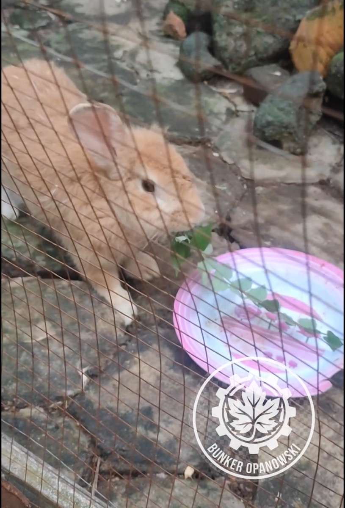
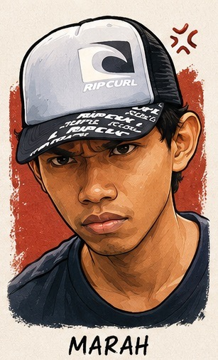

Pagi di Bunker Opanowski jadi saksi sejarah kecil yang terasa gede. Bukan urusan kebun anggur atau instalasi listrik — tapi soal gimana seekor kelinci bisa punya suara narasinya sendiri, diproduksi otomatis dari MacBook Pro 2015, pakai Python dan FFmpeg.
Namanya Latte. Kelinci Bunker yang tiap pagi semangat banget nyerbu daun belimbing wuluh. Dan hari ini, gw kasih dia suara.

1. Awal Mula: Kenapa Harus Diotomasi?
Ide ini mulai sederhana: gw mau kasih narasi audio pada video si Latte yang lagi lahap sarapan. Edit manual? Itu menyiksa dan ga scalable. Kalau konten Bunker makin banyak, masa tiap video harus dubbing manual?
Solusinya jelas: Text-to-Speech (TTS) + FFmpeg = workflow produksi video otomatis yang bisa diulang tanpa capek, tanpa software mahal, dari MacBook 2015 yang udah 10+ tahun umurnya.
2. Hambatan di Terminal: Baut yang Kurang Kencang
Perjalanan nggak selalu mulus. Ada tiga drama yang harus diselesaikan dulu sebelum workflow ini bisa jalan.
Karakter ! di dalam string dianggap history expansion oleh bash. Solusi: hilangkan tanda seru dari teks narasi, atau pakai single quotes yang proper.
Homebrew di macOS proteksi ketat soal instalasi library global. Bypass dengan flag --break-system-packages pas pip install. Risiko minimal, solusi cepat.
FFmpeg bingung nyari file karena path folder belum rapi. Begitu semua file dikumpulin di satu root folder opanowski/, semua langsung lancar jaya.

"Tiga drama sekaligus — bash nolak, pip diblokir, FFmpeg bingung. Kalau bukan karena Latte yang nungguin, mungkin udah gw matiin itu laptop dari tadi."
3. Evolusi Suara AI: Dari gTTS ke Edge-TTS
Iterasi pertama pakai Google TTS (gTTS) — fungsional, tapi hasilnya kaku kayak robot zaman dial-up. Narasi dokumenter si Latte butuh suara yang lebih hangat dan manusiawi.
Switch ke Edge-TTS dari Microsoft — dan langsung ketemu karakter suara yang pas: Ardi (id-ID-ArdiNeural). Berwibawa, natural, cocok banget buat nutupin footage si Latte yang makan penuh semangat.
Edge-TTS punya banyak pilihan suara Bahasa Indonesia. Ardi dipilih karena karakternya berwibawa tapi tetap natural — pas banget untuk tone dokumenter kehidupan si Latte di Bunker.

"Begitu Ardi ngomong pertama kali dari speaker — gw bengong. Ini beneran AI? Natural banget. Kayak presenter TV tapi gratis dan bisa diulang ribuan kali."
4. Teknik "Mixer" FFmpeg — Satu Command, Selesai
Ini bagian yang paling keren. Rahasianya ada di flag -c:v copy — FFmpeg nggak re-encode videonya, cuma jahit audio baru ke stream yang sudah ada. Hasilnya? Render selesai sekedip mata.
Dua audio di-blend pakai amix filter: suara kunyahan si Latte tetap kedengaran tipis, narasi Ardi dominan di atas. Setelan torsi: 30% suara asli + 180% narasi AI.
| Parameter | Nilai | Fungsi |
|---|---|---|
| volume suara asli | 0.3 (30%) |
Suara kunyahan Latte tetap terdengar tipis |
| volume narasi AI | 1.8 (180%) |
Ardi dominan, narasi jelas dan kuat |
| -c:v copy | stream copy |
Video tidak di-re-encode, render super cepat |
| -shortest | auto trim |
Output dipotong mengikuti track terpendek |
| amix duration=first | ikut video |
Durasi audio mengikuti panjang video asli |
5. Hasilnya: Live di YouTube Shorts 🎬
Video si Latte makan daun belimbing wuluh — dengan narasi Ardi yang berwibawa — udah live. Dari script Python ke YouTube Shorts, semua jalan dari MacBook 2015 di Bunker Ciracas.

6. Pelajaran Hari Ini
📌 Penutup
Dengan integrasi script Python dan kekuatan FFmpeg, Bunker Opanowski kini siap memproduksi konten berkualitas tinggi dengan narasi otomatis — dari MacBook 2015 yang "uzur" sekalipun.
Si Latte bukan sekadar kelinci. Dia sekarang adalah asisten digital Bunker yang punya suara sendiri. Dan yang terpenting: workflow ini bisa diulang untuk konten apapun, tanpa software mahal, tanpa editor profesional.
Next step? Gw mau coba multi-scene narasi berbeda per segmen video. Stay tuned di Bunker Opanowski. 🏴
Tetap autodidak, tetap berkah! 🏴
"MacBook 2015, Python, FFmpeg. Tanpa software mahal, tanpa editor profesional. Si Latte udah punya suara — workflow-nya tinggal diulang. Beres."
Lo pernah coba otomasi produksi konten? Share pengalamannya! 🎬